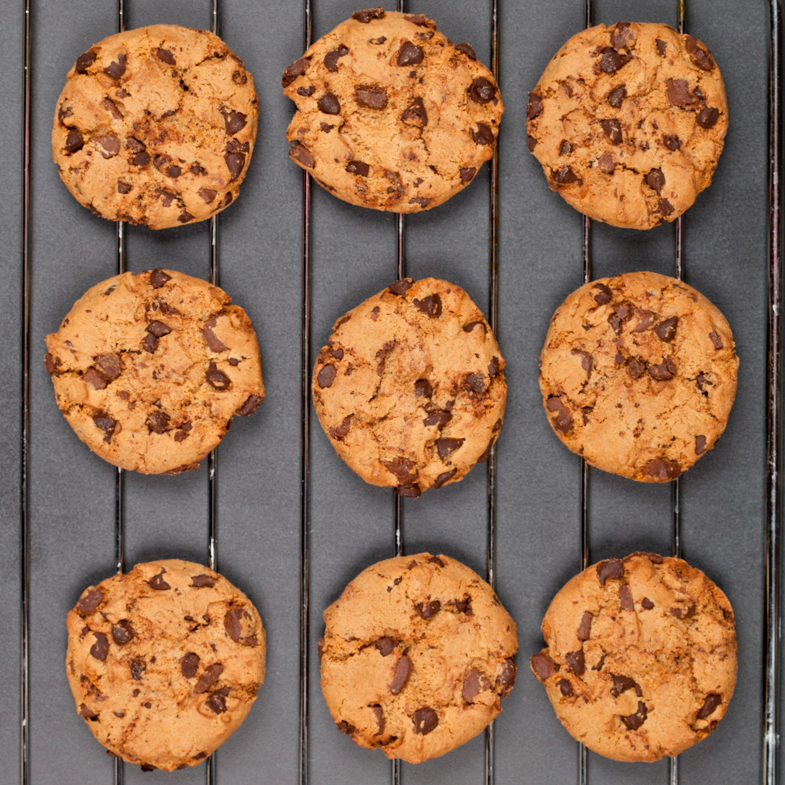

Chocolate Chip Cookies

Description
This chocolate chip cookie recipe makes dozens of cookies with crisp edges, chewy centers, and melty chocolate chips. It is truly the best! With more than 14,000 rave reviews from the Allrecipes community, this top-rated chocolate chip cookie recipe will quickly become your go-to for every occasion.
Ingridients
- 1 cup butter, softened
- 1 cup white sugar
- 1 cup packed brown sugar
- 2 large eggs
- 2 teaspoons vanilla extract
- 1 teaspoon baking soda
- 2 teaspoons hot water
- ½ teaspoon salt
- 3 cups all-purpose flour
- 2 cups semisweet chocolate chips
- 1 cup chopped walnuts
Steps
- Gather your ingredients, making sure your butter is softened, and your eggs are room temperature.
- Preheat the oven to 350 degrees F (175 degrees C). Beat butter, white sugar, and brown sugar in a large bowl with an electric mixer until smooth and creamy.
- Beat in eggs, one at a time, then stir in vanilla.
- Dissolve baking soda in hot water; add to batter along with salt and mix until combined.
- Stir in flour, chocolate chips, and walnuts until a soft dough forms.
- Drop rounded spoonfuls of cookie dough 2 inches apart onto ungreased baking sheets.
- Bake in the preheated oven until edges are lightly browned, about 10 minutes.
- Cool on the baking sheets briefly before removing to a wire rack to cool completely.
- Store in an airtight container or serve immediately and enjoy!